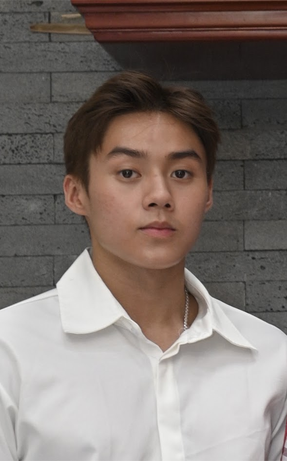

Michael Vu
I am a reliable, respectful, and motivated university student with interest of building experience in the workforce. I am able to learn new tasks quickly, proficient in growing key customer relationships, and can handle tasks effectively and efficiently with great attention to detail..
Email: üëâ michaelvu1811@gmail.com
Education
2021 – Present - Bachelor of Science in Computer Science, Wilfrid Laurier University | Waterloo, Ontario
Relevant Courses: Introduction to Object-Oriented Programming, Data Structures I, Introduction to Programming
Graduated 2020 - High School Diploma, St Johns College | Brantford, Ontario
Work History
üöß Summer Student TCBA Member | Toyota Boshoku
06/2022 - 09/2022
Worked on door line as a full-time manufacturing member building doors for toyota rav 4.
- Performed well in a constantly stressful and fast paced environment
- Performed tasks well which required great attention to detail
- Worked as part of a sucessful team
üöß Dairy/Frozen associate | Walmart
02/2021 – 09/2021
Worked in dairy deptmarment as a part-time assoicate providing customer service, maintaining shelves, and keeping count of inventory.
- Performed well in a fast paced environment
- Demonstrated strong interpersonal skills while dealing with customers
- Demonstrated strong communication skills
üöß Bakery clerk | Zehrs
10/2017 - 10/2019
Worked in bakery deptmarment maintaining shelves, and organizing freezer and skids.
- Performed well in a fast paced environment
- Demonstrated strong interpersonal skills while dealing with customers
- Worked as part of a sucessful team